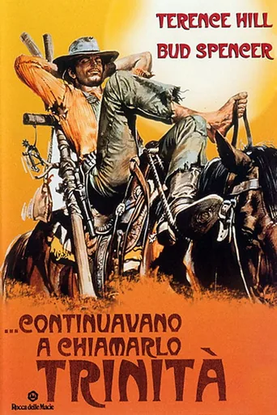

Меня все еще зовут Троица 1971
Братья клянутся своему умирающему отцу, что они станут настоящими «плохими парнями», но всегда будут заботиться друг о друге. Они выполняют обещание и примыкают к торговцам оружием, окопавшимся в небольшом монастыре. К сожалению, сами торговцы почему-то принимают Троицу и Бамбино за федеральных агентов и планируют их укокошить… А тем временем братья обнаруживают, что могут стать владельцами 50 тысяч долларов…
Открыть в каталогеДанные и постеры принадлежат их правообладателям. Этот продукт использует TMDB API, но не одобрен и не сертифицирован TMDB.